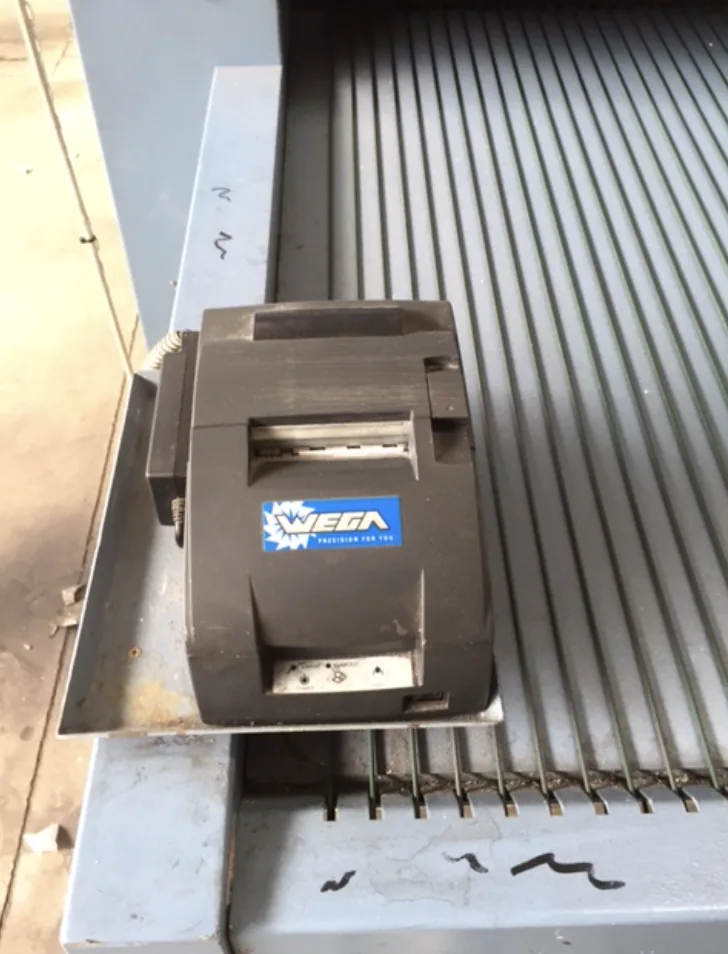
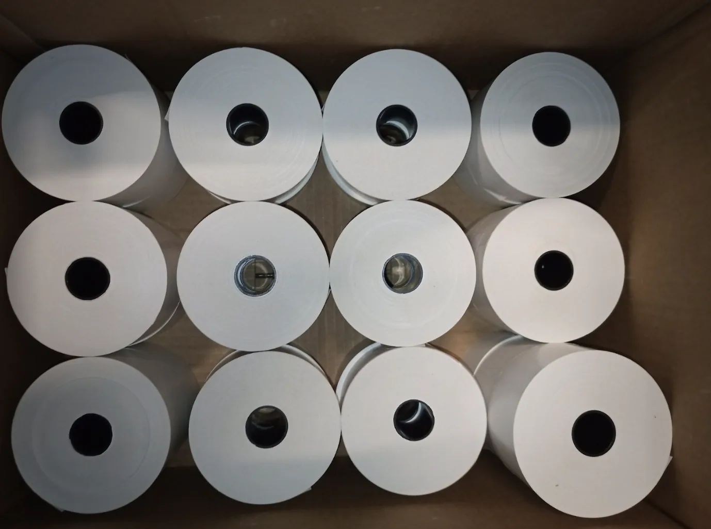
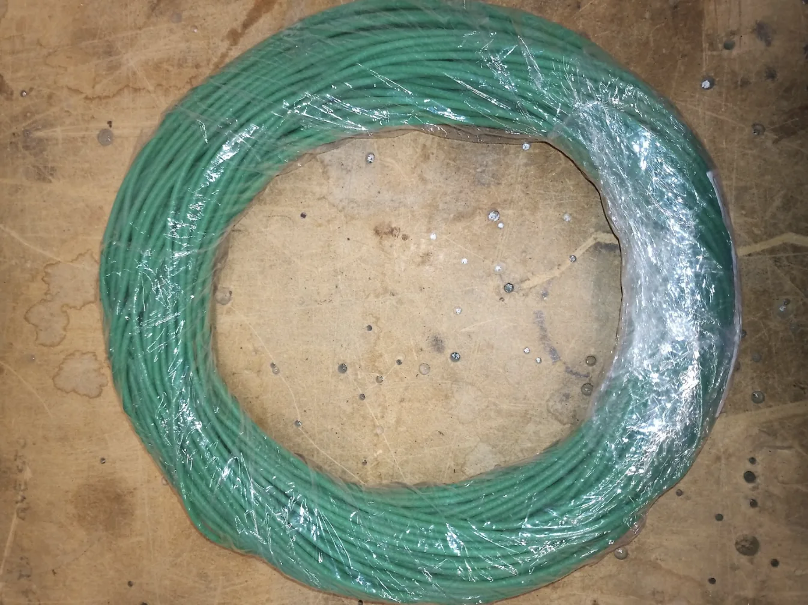

Measuring Machine
Spare Parts
Spare parts and consumables for electronic leather measuring machines — thermoprint paper, rubber transport cords, printers, photocells, sensors and rollers. Sourced for your machine and quality-checked before they ship.

Reduce Downtime
Keep thermoprint paper, transport cords and a spare print head on the shelf. When the printer fails or the feed slips, swap the part and your measuring line is back in production in minutes, not days.
Protect Accuracy
Sound cords, clean photocells and a calibrated roller-encoder keep the area reading precise — so every hide is measured, stamped and invoiced correctly, with no disputes over area.
Matched To Your Machine
Paper, cords, printers, photocells and rollers identified against your exact brand and model — original and compatible, with no minimum order quantity.
Spare Parts for
Leather Measuring Machines
Kymera Group supplies spare parts and consumables for the electronic measuring machines used in tanneries to measure the surface area of wet blue, crust and finished leather. The hide is carried through on rubber transport cords while a field of photocells reads its outline and an encoder tracks its length — the machine computes the area precisely and stamps it onto the leather, printing barcode or QR labels for traceability.
From the consumables used every shift — the thermoprint paper and the rubber transport cords — through to the printer, photocells, sensors and rollers that keep the measurement accurate, we source the right component for your specific machine. Tell us your brand and model, and we'll match the part, confirm the specification and quote it for you.

The Complete
Measuring Machine Catalogue
From thermoprint paper and transport cords to printers, photocells and rollers — everything your electronic measuring machine needs, matched to your brand and model and quality-checked before dispatch.
Thermoprint Paper
Thermal paper that feeds the on-board printer — stamps the measured surface area and prints adhesive barcode/QR labels for warehouse management and traceability. A regular consumable.
Request a Quote
Rubber Transport Cord
The rubber cords (belts) that carry the hide through the machine at constant speed. Worn or stretched cords cause slip and uneven feed — replace them to keep the area reading accurate.
Request a QuotePrinter & Print Head
The printer and print head that stamp the measured area directly onto the leather and print labels with barcode/QR codes — the heart of the machine's marking and traceability system.
Request a QuotePhotocells & Sensors
The photocells and optical sensors that form the measuring field — they read the outline of every hide so the machine can compute the surface area precisely. Supplied per brand and model.
Request a QuoteTransport & Measuring Rollers
Feed, pinch and measuring rollers with their encoders — move the hide squarely through the machine and track its length for an accurate, repeatable area reading.
Request a Quote
Electronics & General Spare Parts
Control boards, displays, encoders, power supplies and wear parts for electronic measuring machines — tell us your brand and model and we'll identify the correct part.
Request a QuoteMeasuring & Stamping, Step by Step
The electronic measuring machine reads the surface area of every hide and marks it for sale and traceability. The hide is fed in, scanned by photocells, stamped and recorded — here is the cycle on the production floor.
Feed the Hide
The hide is laid on the infeed and carried through the machine by the rubber transport cords at a constant, controlled speed.
Scan the Area
A field of photocells reads the outline of the hide while rollers and an encoder track its length, so the machine computes the surface area.
Stamp & Print
The printer marks the measured area directly on the leather and, on thermoprint paper, produces adhesive barcode/QR labels.
Record & Sort
Area data is logged by bunch, batch and daily total for invoicing and traceability, and the measured hide moves on to packing.
Your Questions,
Answered
How does an electronic leather measuring machine work?
The hide is fed in and carried through by rubber transport cords at constant speed. A field of photocells reads its outline while rollers and an encoder track its length, so the machine computes the surface area precisely. The area is then stamped onto the leather and can be printed on adhesive barcode/QR labels for traceability.
What is thermoprint paper used for?
Thermoprint paper is the thermal consumable that feeds the measuring machine's printer. It is used to stamp the measured surface area and to print adhesive labels with barcode or QR codes for warehouse management and traceability. It is replaced regularly as a consumable.
What are the rubber transport cords for?
The rubber transport cords carry the hide through the machine at a constant, controlled speed. Worn or stretched cords cause slippage and uneven feeding, which affects the accuracy of the area reading, so they are replaced as a routine wear item.
Do you supply printers, print heads and photocells?
Yes. We supply printers and print heads that mark the measured area on the leather and print labels, as well as the photocells and optical sensors that form the measuring field. Tell us your machine brand and model and we will identify the correct part.
Which measuring machine brands do your spare parts fit?
Our parts and consumables are compatible with the most widespread brands, including GER Elettronica, Wega and Orange. Send us your machine model and we will confirm the correct part for you.
Is there a minimum order, and can you identify my part?
There is no minimum order quantity — a single roll of paper, one set of cords or a full consumables package. Send us your measuring machine brand, model and a photo or reference of the worn part and our team will identify the correct replacement and quote it.
Send Your Request
Tell us your measuring machine brand and model, the part you need and the quantity — we'll come back to you with the right component, the right price, and a clear lead time.